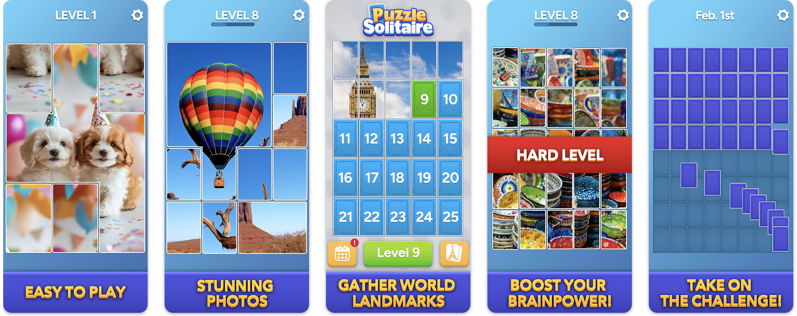
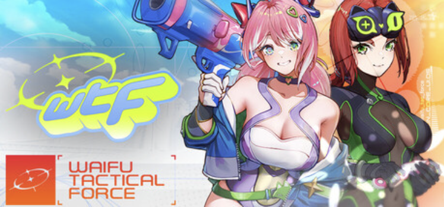
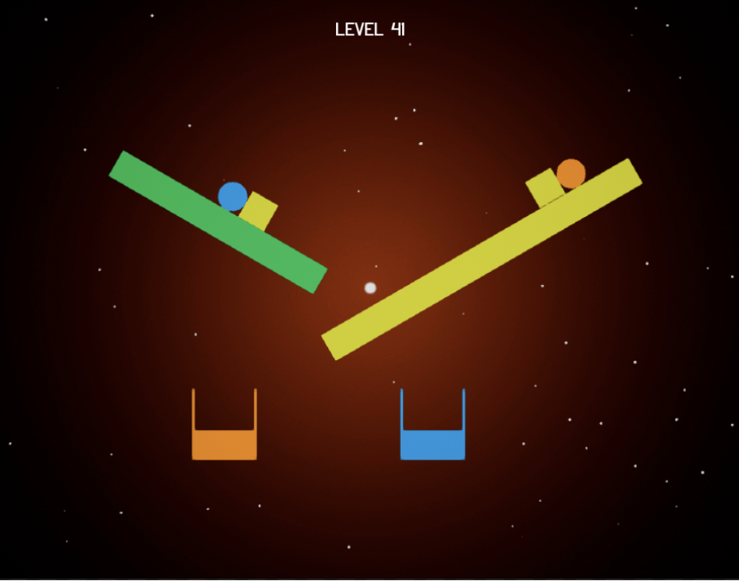
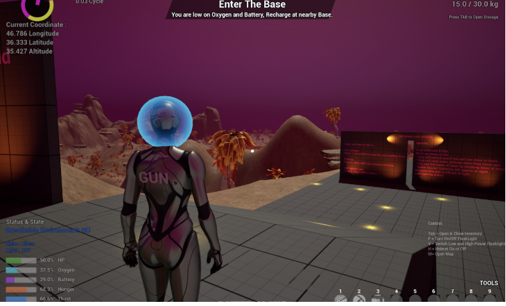
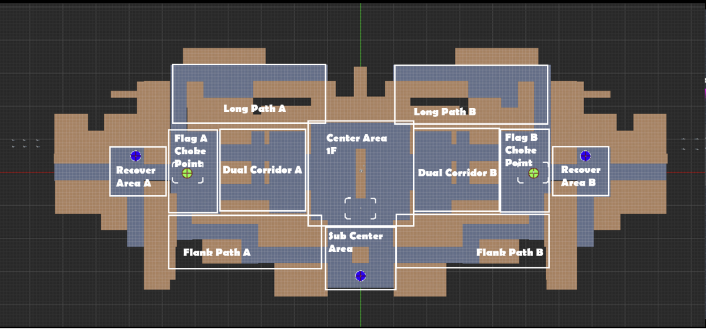
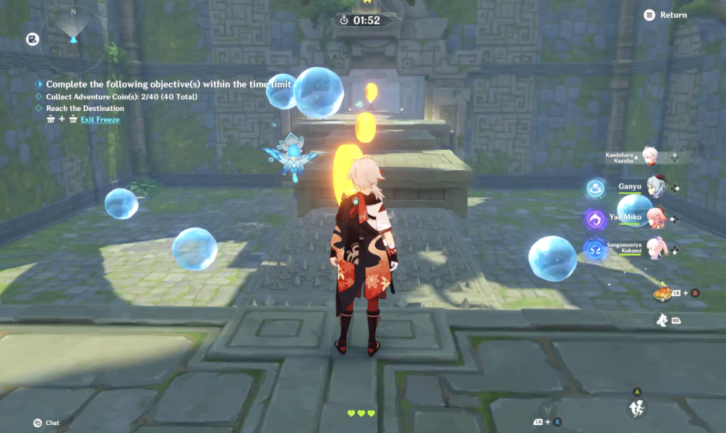
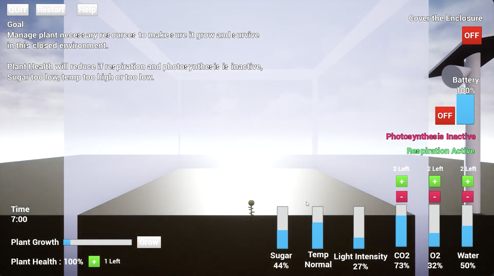
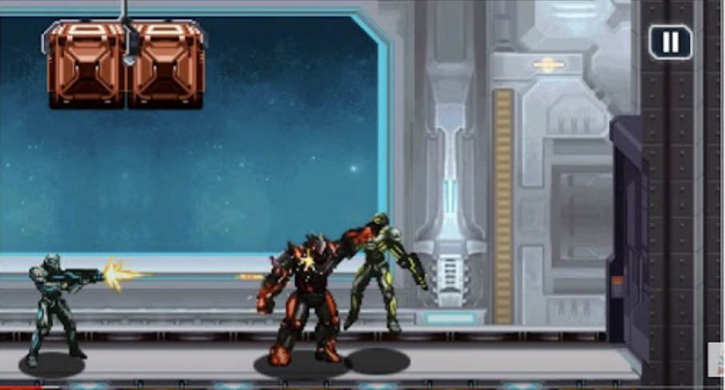

Selected work
Projects
Professional

CurrentPuzzle Solitaire
Level editor tooling built with AI-assisted development —
cut delivery time from 3–4 weeks to under one week.
Designed the full content generation pipeline for scalable, high-volume level production.
3–4 week build → under 1 week with AI tooling
View design breakdown

ProfessionalWTF: Waifu Tactical Force
Anime tactical FPS. Data-driven weapon balancing and
design workflow setup; helped establish the team's documentation practices.
View design breakdown
 Professional
Professional
Contenders: Arena
Multiplayer hero shooter. Designed 5+ multiplayer levels (TDM, Tutorial, Racing);
reworked weapon balance and camera/3C systems; contributed to multi-phase boss fight design.
View design breakdown
 Professional
Professional
Valthirian Arc: Hero School Story 2
Turn-based RPG tycoon. Designed economic progression systems using self-built
Excel simulation tools; led UI/UX from concept to release; developed 3C across all game modes.
Built monster placement tool that cut designer workload by 60%
View design breakdown
Tirta (Unannounced)
3rd-person action-adventure. Designed tutorial through first boss,
prototyped puzzle mechanics, and implemented UI/UX and in-game cinematics.
View design breakdown
Personal

Solo / ReleasedBAL Solid
Casual physics puzzle game designed and shipped solo —
70 levels, 72 achievements, 100% positive reviews on Steam.
Handled the full pipeline: design, levels, implementation, and publishing.
100% positive reviews on Steam · 70 levels · 72 achievements
View design breakdown

PersonalHowling Dark
Solo prototype built from scratch in 10 days —
a complete horror survival experience demonstrating rapid full-stack prototyping.
Concept to playable prototype in 10 days
View design breakdown

Level StudyAlaskan Oil Rig — CTF Map
A 6v6 Capture-the-Flag map built to sharpen FPS level design:
balanced engagement ranges, interconnected flanking routes, and
two-layer verticality around a central focal point.
View design breakdown

Level StudyDivine Ingenuity Dungeon
A two-room 3rd-person dungeon built in Genshin's level editor —
a study in guiding players without UI: positive-reinforcement pathing,
funnel-before-reveal, and motivating curiosity through incompleteness.
View design breakdown

Systems StudyPhotosynthesis
A systemic resource-management sim teaching real photosynthesis —
built in 3 days as an entry test. An exercise in balancing
interconnected variables and the tension between fun and accuracy.
View design breakdown

First ProjectN.O.V.A. Legacy (Java Port)
My first project as a designer: porting a mobile shooter to the Nokia 5800.
Keypad-to-touch UI redesign, landscape level rework, new cinematics —
all under a punishing ~1MB size budget.
View design breakdown
Career
Work Experience
Oct 2025 — Present
Tripledot Studios
Level Designer
Puzzle Solitaire · Mobile · Jakarta, Indonesia
- Built level editor tooling with AI-assisted development — cut delivery time from 3–4 weeks to under one week.
- Designed the full content generation pipeline, enabling scalable, high-volume level production.
- Fluent in AI as a daily workflow tool — I own the system design, AI accelerates execution.
Mar 2025 — Mar 2026
Worlds — Team Waifu
Game Designer
WTF: Waifu Tactical Force · PC · Steam · Freelance / Contract
- Contributed to game design and weapon balancing using data-driven analysis.
- Helped shape and establish the team's design workflow and documentation practices.
Nov 2022 — Aug 2024
Gamecan
Level Designer
Contenders: Arena · UE5 · Pärnu, Estonia (On-site)
- Designed 5+ multiplayer levels (TDM, Tutorial, Racing) in Unreal Engine 5.
- Reworked weapon balance and camera/3C systems across all character classes.
- Contributed to a multi-phase boss fight design alongside the team.
- Created the team's design documentation template — reduced cross-discipline miscommunication by 60%.
Jun 2019 — Nov 2022
Agate International
Lead Game Designer / prev. Senior Game Designer
Valthirian Arc: Hero School Story 2 · Tirta · Bandung, Indonesia
- Directed system & UX design from concept to release; led FTUE improvements that raised retention.
- Balanced in-game economy through data-driven iteration using self-built Excel simulation tools.
- Built a monster placement tool that cut designer workload by 60%.
- Managed team priorities with zero burnout incidents across the project.
Mar 2016 — Jun 2019
Gameloft
Senior Game Designer / prev. Junior
Prototyping Team · Yogyakarta, Indonesia
- Delivered a new hyper-casual prototype every 1–2 weeks on the Prototyping Team.
- Designed and implemented 5+ levels for a side-scrolling shooter; optimised mobile assets by up to 90%.
Jul 2011 — Sep 2013
Gameloft
QA Senior Tester / prev. QA Tester
Yogyakarta, Indonesia
- Built foundational knowledge of game dev pipelines and quality standards across multiple mobile titles.
Education & Languages
Diploma — Computer Information Management
University Amikom
Languages
English — Proficient
Indonesian — Native
Get in touch
Let's work together.
Open to new opportunities, collaborations, and interesting design conversations.
Send me an email